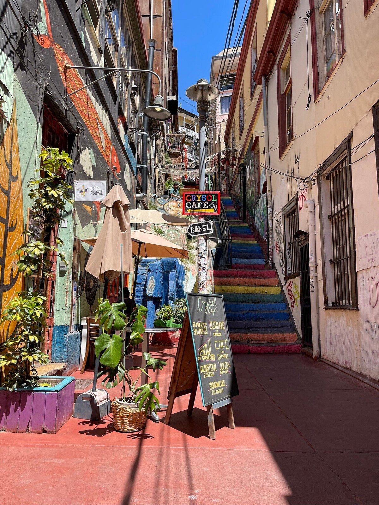

Paseo Gervasoni
Hermoso lugar con murales y vistas al puerto.
Ascensor Concepción

Un ascensor histórico que conecta el cerro con el puerto.
Plaza Sotomayor

Centro cívico y punto de encuentro.
Una breve presentación de lugares que me gustan.
Hermoso lugar con murales y vistas al puerto.
Un ascensor histórico que conecta el cerro con el puerto.
Centro cívico y punto de encuentro.